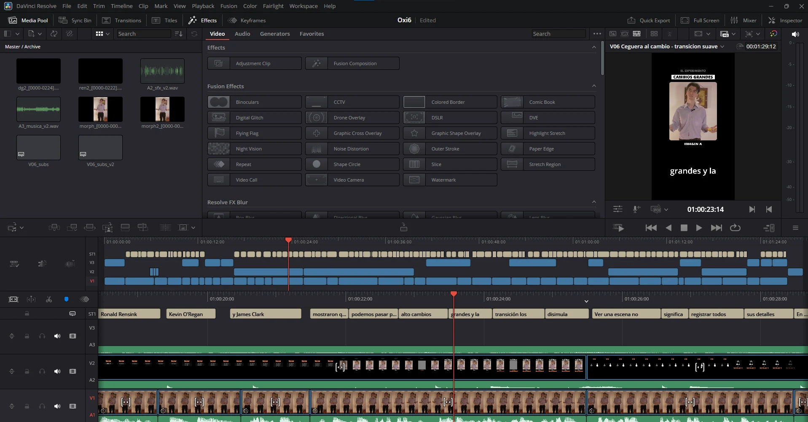

Postproducción de video con IA: DaVinci Resolve conectado a Claude
Cómo conecté DaVinci Resolve a Claude mediante MCP para animar el logo de Oxi, armar reels verticales, empatar color, generar efectos de sonido por código y documentar todo en una guía de edición para el equipo.
Matías Gaglio ·
Read in EnglishProducir video corto con un equipo chico.
Oxi, la agencia de contenido y análisis que estoy construyendo, publica reels con explicaciones de marketing. Cada pieza necesita identidad de marca, subtítulos, animaciones sobre la persona que habla, efectos de sonido y un formato vertical prolijo. El cuello de botella no era la idea, sino las horas de edición repetitiva.
Un puente local entre Claude y DaVinci Resolve.
Usé un servidor MCP de código abierto que expone la API de scripting de DaVinci Resolve. Antes de instalarlo revisamos el instalador y el puente: escucha solo en mi propia computadora y pide un token aleatorio. Quedó en un entorno de Python separado, con actualizaciones en modo aviso y un respaldo de la configuración.
Para trabajar, abro Resolve con el proyecto y ejecuto el script del puente desde el menú Workspace. A partir de ahí Claude puede crear timelines, importar material, ubicar clips en pistas, poner marcadores y leer cuadros renderizados para revisar el resultado.
Un logo que se escribe solo.
La animación del logo simula un cursor naranja que escribe la O, la X y la i, salta al punto y lo convierte en el acento de la marca. Las capas se generan con Python a la resolución final y se arman en Resolve, en lugar de recortar un video horizontal, para que los bordes queden nítidos.
Guiño naranja
Teclas, encastre del cursor y un guiño final, cada sonido en su propia pista para poder ajustarlo.
De blanco a naranja
El acento destella como un tubo de neón hasta quedar fijo; un acorde ascendente cierra la animación.
Loop sobre croma
Cinco segundos que empiezan y terminan igual, con un parpadeo de encendido y apagado sin semitransparencias para que el keying quede limpio.
9:16 para Instagram
El logo ocupa cerca del 75 % del ancho y queda lejos de los botones laterales y del texto inferior de la app.
Efectos de sonido generados por código.
Los clics de teclado, el golpe de encastre, el zumbido de neón y los blips se sintetizan con Python. Toman los tiempos del mismo script que genera las capas, así que si la animación cambia, el sonido la sigue. Como el agente no puede escuchar, la verificación es visual: se grafican las ondas contra los cuadros para confirmar que cada sonido cae en su frame y que la mezcla no pasa de −1 dBFS. La escucha final queda de mi lado.
El mismo enfoque produjo otros recursos para la biblioteca del equipo: un contador mecánico de 18 ticks, un barrido estéreo y un tecleo con ritmo irregular, preparados con fundidos cortos y picos normalizados.
Animaciones sobre el discurso.
En un episodio sobre demanda de búsqueda, Claude agregó 11 animaciones en una pista nueva: una barra de búsqueda que se escribe sola, resultados que aparecen y una tarjeta que dice que tu negocio no figura, palabras que se tachan, un botón de guardar y un cierre con el botón de seguir. Las frases destacadas reemplazan a sus subtítulos para no duplicar texto, y cada recurso tiene su sonido: clics, pops o caja registradora.

Convertir lo aprendido en un estándar.
El último paso fue documentar el proceso para que cualquier editor del equipo pueda repetirlo. La guía se genera con Python como PDF y tiene diez pasos en el orden real del trabajo:
| Paso | Qué define |
|---|---|
| Proyecto | 1080 × 1920 y la cadencia de la cámara, con la estructura de carpetas. |
| Vertical | Rotación y zoom para pasar tomas 1440 × 1080 a vertical, con la fórmula para otras cámaras. |
| Audio | Sincronía por forma de onda y una cadena de limpieza hasta −14 LUFS. |
| Color | Waveform, Vectorscope y empate de tomas con un still en pantalla partida. |
| Corte | De 2 a 4 cuadros de aire, muletillas, errores y zooms de 10 a 15 % para disimular saltos. |
| Subtítulos | Open Sans 30, máximo dos líneas y unos 34 caracteres por línea. |
| Recursos | Qué animación usar según lo que dice el guion y cuántas son demasiadas. |
| Sonido | 14 situaciones, cada una con su efecto, su cuadro y su nivel. |
| Exportar | Ajustes de Deliver, corrección de audio desfasado con FFmpeg y checklist final. |
Qué cambió en el proceso.
- La repetición se automatiza: armar timelines, ubicar capas y sincronizar sonidos deja de ocupar la mayor parte del tiempo.
- El criterio se documenta: la guía convierte decisiones sueltas en reglas que el equipo puede aplicar.
- La revisión sigue siendo humana: mirar y escuchar el resultado final es lo que define si una pieza se publica.